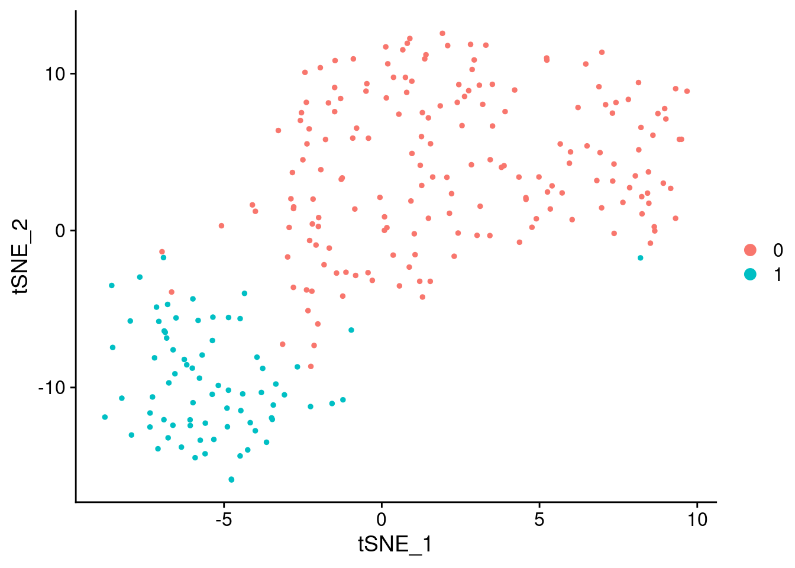
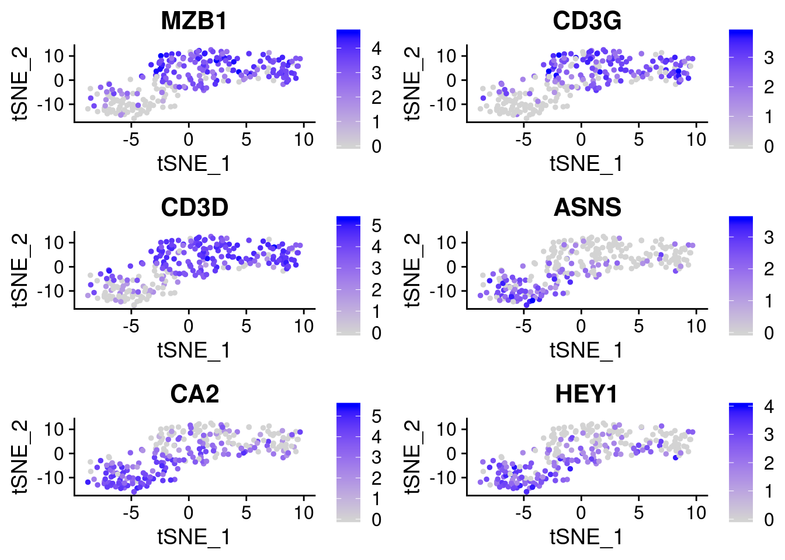
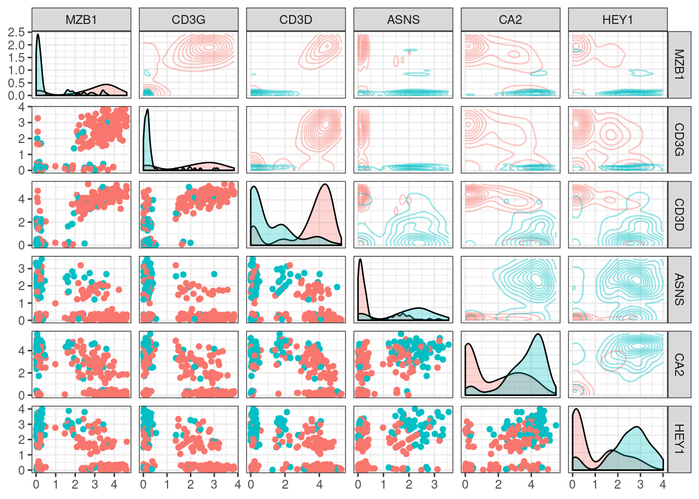
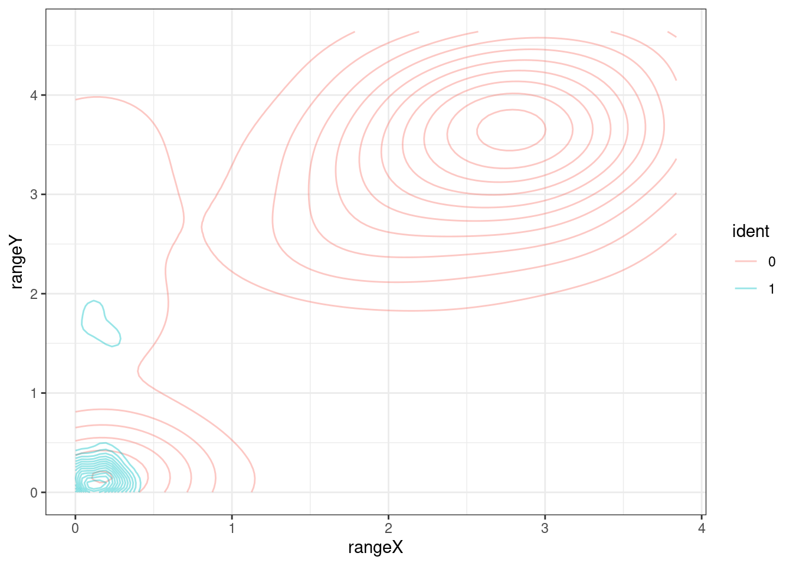
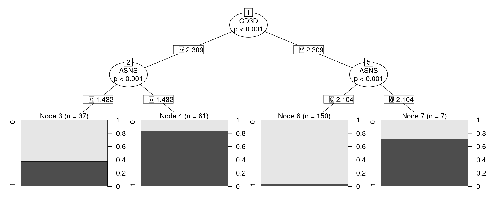
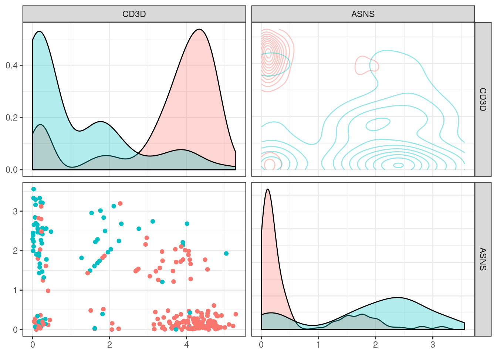
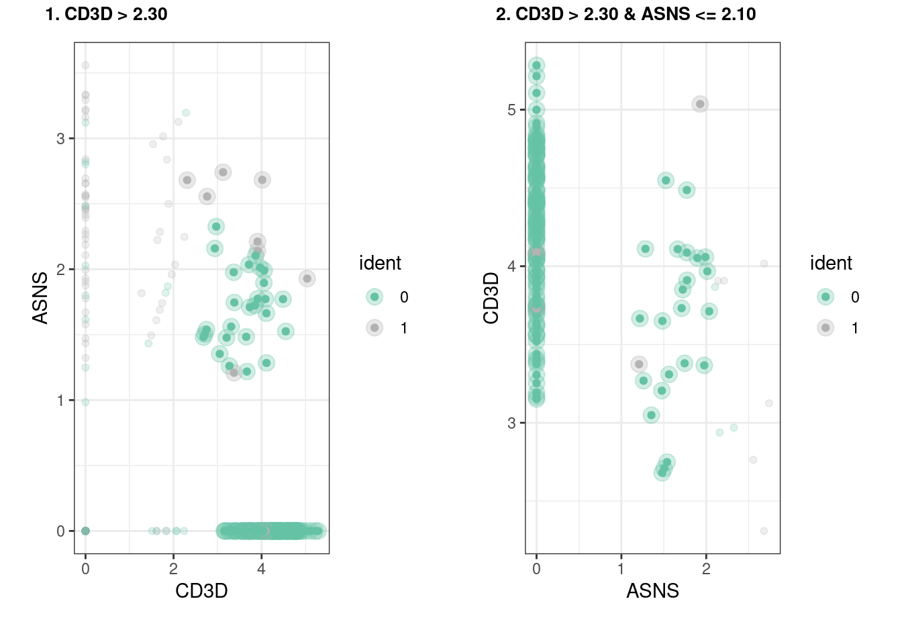

sctree
sctree.Rmdlibrary(sctree)
#> Loading required package: Seurat
#> Registered S3 method overwritten by 'GGally':
#> method from
#> +.gg ggplot2
#>
#> Attaching package: 'sctree'
#> The following objects are masked from 'package:Seurat':
#>
#> FindAllMarkers, FindConservedMarkers, FindMarkerssctree
The goal of sctree is to create a tool to accelerate the transition from single cell rna-sequencing to calidation and new sub-population discovery.
Features suggesting pseudo-gating strategies to purify found populations via flow-cytometry, antibody querying and cross validations between datasets.
Installation
Currently we are not hosted in CRAN but the package can be installed by using the following function in R
Usage
I am assuming you have already done your clustering and dimensional reduction using seurat and we have our seurat object.
For this examples we will use a dummy dataset that come bundled with the package
small_5050_mix, this dataset comes originally from the 1:1 mixture of Jurkat and 293T cells provided by 10x.
Original data can be found here:
library(sctree)
library(Seurat)
set.seed(6)
data(small_5050_mix)
small_5050_mix
#> An object of class Seurat
#> 1031 features across 255 samples within 1 assay
#> Active assay: RNA (1031 features)
#> 2 dimensional reductions calculated: pca, tsne
DimPlot(small_5050_mix, reduction = "tsne")
Finding important variables to classify clusters
We base our importances on the “classification value” they give to a random forest (using the implementation in the ranger package)
So lets fit the random forest … Here we are adding the warn.imp.method to prevent a warning message sent by ranger when most of the variables are correlated with the clustering.
Please reffer to the of the importance_pvalues section in the ranger documentation when addressing this issue and for more details.
library(sctree)
rang_importances <- ranger_importances(
small_5050_mix,
cluster = "ALL",
warn.imp.method = FALSE)By default, we obtain a data frame containing only importances with pvalues under 0.05.
Seurat Interface
As an analogous function to Seurat’s FindAllMarkers, we offer ranger_importances or the RangerDE option for FindAllMarkers
markers <- FindAllMarkers(
small_5050_mix,
warn.imp.method = FALSE,
test.use = "RangerDE")
#> Calculating cluster 0
#> Calculating cluster 1
head(markers)
#> importance p_val gene avg_logFC pct.1 pct.2 p_val_adj cluster
#> MZB1 0.9641974 0 MZB1 2.004299 0.828 0.227 0 0
#> CD3G 1.2004702 0 CD3G 1.849551 0.744 0.107 0 0
#> CD3D 3.2936540 0 CD3D 1.842246 0.872 0.373 0 0
#> ARHGDIB 2.3889365 0 ARHGDIB 1.787994 0.856 0.320 0 0
#> AIF1 0.4203789 0 AIF1 1.759311 0.756 0.173 0 0
#> FYB 0.8291528 0 FYB 1.750418 0.739 0.107 0 0
plot.markers <- do.call(rbind, lapply(split(markers, markers$cluster), head, 3))
FeaturePlot(small_5050_mix, unique(plot.markers$gene))
Note how variable importances can be high if a marker is either preferentially present of preferentially absent. Therefore as a pre-filtering step we implemented a modified version of seurat’s “FindMarkers”
library(Seurat)
library(sctree)
head(
sctree::FindMarkers(
small_5050_mix,
features = rownames(small_5050_mix@assays$RNA@data),
ident.1 = 0, test.use = "RangerDE"))
#> importance p_val gene avg_logFC pct.1 pct.2 p_val_adj
#> MZB1 0.9641974 0 MZB1 2.004299 0.828 0.227 0
#> CD3G 1.2004702 0 CD3G 1.849551 0.744 0.107 0
#> CD3D 3.2936540 0 CD3D 1.842246 0.872 0.373 0
#> ARHGDIB 2.3889365 0 ARHGDIB 1.787994 0.856 0.320 0
#> AIF1 0.4203789 0 AIF1 1.759311 0.756 0.173 0
#> FYB 0.8291528 0 FYB 1.750418 0.739 0.107 0
markers <- sctree::FindAllMarkers(
small_5050_mix,
features = rownames(small_5050_mix@assays$RNA@data),
test.use = "RangerDE")
#> Calculating cluster 0
#> Calculating cluster 1
# Here we just extract the top 3 markers for each cluster
plot.markers <- do.call(rbind, lapply(split(markers, markers$cluster), head, 3))
plot.markers
#> importance p_val gene avg_logFC pct.1 pct.2 p_val_adj cluster
#> 0.MZB1 0.9641974 0 MZB1 2.004299 0.828 0.227 0 0
#> 0.CD3G 1.2004702 0 CD3G 1.849551 0.744 0.107 0 0
#> 0.CD3D 3.2936540 0 CD3D 1.842246 0.872 0.373 0 0
#> 1.ASNS.1 3.7143112 0 ASNS 1.428501 0.787 0.217 0 1
#> 1.CA2.1 0.4797642 0 CA2 1.297591 0.933 0.494 0 1
#> 1.HEY1.1 1.1533167 0 HEY1 1.295811 0.893 0.389 0 1Visualizing the expected outcome of a flow cytometry experiment
Lets say we choose the top n markers from the former list and we did a flow experiment … HYPOTHETICALLY the marker distribution would resemble the rna expression profile for which we have the function plot_flowstyle

We can also focus in one of the pannels (and check the color conventions)

Suggesting a gating strategy for the markers
A general strategy to get separate all clusters
Visualizing the tree as … a tree … we can see how our model is a simple series of yes/no questions.
If we wanted to classifiy a random cell: in the first node, we check if the expression of that gene is higher or lower than a given value, if it is lower, we proceed to the left, if not we go right. We keep doing that until we have no more branches. This final node will have a predicted cluster, in this plot we can also see how pure can we expect this group to be and how many of the cells in our training set clasify as part of it.

When inspecting the tree_fit, we can see a more detailed text representation of this tree.
print(tree_fit)
#>
#> Model formula:
#> ident ~ MZB1 + CD3G + CD3D + ASNS + CA2 + HEY1
#>
#> Fitted party:
#> [1] root
#> | [2] CD3D <= 2.30877
#> | | [3] ASNS <= 1.43241: 0 (n = 37, err = 37.8%)
#> | | [4] ASNS > 1.43241: 1 (n = 61, err = 16.4%)
#> | [5] CD3D > 2.30877
#> | | [6] ASNS <= 2.10406: 0 (n = 150, err = 3.3%)
#> | | [7] ASNS > 2.10406: 1 (n = 7, err = 28.6%)
#>
#> Number of inner nodes: 3
#> Number of terminal nodes: 4Sometimes one might think that the proposed strategy is too complicated or not implementable in the experimental settings, in order to add constraints to the fit one can give additional arguments that will be passed to partykit::ctree_control, such as maxdepth = 2 (maximum 2 questions per cell)
tree_fit <- fit_ctree(
small_5050_mix, genes_use = top_markers,
cluster = "ALL", maxdepth = 2)
print(tree_fit)
#>
#> Model formula:
#> ident ~ MZB1 + CD3G + CD3D + ASNS + CA2 + HEY1
#>
#> Fitted party:
#> [1] root
#> | [2] CD3D <= 2.30877
#> | | [3] ASNS <= 1.43241: 0 (n = 37, err = 37.8%)
#> | | [4] ASNS > 1.43241: 1 (n = 61, err = 16.4%)
#> | [5] CD3D > 2.30877
#> | | [6] ASNS <= 2.10406: 0 (n = 150, err = 3.3%)
#> | | [7] ASNS > 2.10406: 1 (n = 7, err = 28.6%)
#>
#> Number of inner nodes: 3
#> Number of terminal nodes: 4
plot(tree_fit)
Since not all variables are ultimately used in our classifier, one can access the ones that were by using varimp(tree_fit)
partykit::varimp(tree_fit)
#> CD3D ASNS
#> 0.2849840 0.1505534
plot_flowstyle(small_5050_mix, names(partykit::varimp(tree_fit)))
One can also request the package to suggest a specific strategy only for a given cluster. This function is not expected to give drastically different results in datasets with few clusters, but it can definitely come usefull when many clusters are present and one is interested in a specific one.
tree_fit <- fit_ctree(small_5050_mix, genes_use = top_markers, cluster = "0")
print(tree_fit)
#>
#> Model formula:
#> ident ~ MZB1 + CD3G + CD3D + ASNS + CA2 + HEY1
#>
#> Fitted party:
#> [1] root
#> | [2] CD3D <= 2.30877
#> | | [3] ASNS <= 1.43241: clus 0 (n = 37, err = 37.8%)
#> | | [4] ASNS > 1.43241: not clus 0 (n = 61, err = 16.4%)
#> | [5] CD3D > 2.30877
#> | | [6] ASNS <= 2.10406: clus 0 (n = 150, err = 3.3%)
#> | | [7] ASNS > 2.10406: not clus 0 (n = 7, err = 28.6%)
#>
#> Number of inner nodes: 3
#> Number of terminal nodes: 4Sometimes it is useful to visualize directly the subset of cells that will be “gated” out in each rule, this can be easily achieved by using our implementation of plot_gates

We have also implemented a way to export these rules as a garnett classifier. for more detail on how the classifier is implemented please refer to the garnett documentation
as.garnett(tree_fit)
#> > clus 0_node_3 (n = 37)
#> expressed below: ASNS 1.432, CD3D 2.309
#>
#> > clus 0_node_6 (n = 150)
#> expressed above: CD3D 2.309
#> expressed below: ASNS 2.104
#>
#> > not clus 0_node_4 (n = 61)
#> expressed above: ASNS 1.432
#> expressed below: CD3D 2.309
#>
#> > not clus 0_node_7 (n = 7)
#> expressed above: ASNS 2.104, CD3D 2.309Finding antibodies for the experiment
Since we acknowledge most experimental workflows need antibodies. We have implemented several functions to look for antibodies in vendor websites, as well as some helper functions to find the other posible aliases a gene might have.
Here is a simple example for a gene widely know to have an antibody available
library(sctree)
head(query_biocompare_antibodies("CD11b"))
#> title
#> 1 Anti-CD11b (integrin alpha-M) Rabbit Monoclonal Antibody, Clone#RM290
#> 2 Anti-CD11b Rabbit Monoclonal Antibody
#> 3 Anti-CD11b/ITGAM Picoband Antibody
#> 4 Anti-Human CD11b DyLight 488 conjugated Antibody
#> 5 Monoclonal Antibody to CD11b (human)
#> 6 CD11b antibody (FITC)
#> vendor
#> 1 BosterBio
#> 2 BosterBio
#> 3 BosterBio
#> 4 BosterBio
#> 5 MyBioSource.com
#> 6 MyBioSource.com
#> specification
#> 1 Applications: WB, IHC; Reactivity: Human (Hu); Conjugate/Tag: Unconjugated; Quantity: 100uL
#> 2 Applications: WB, IF, IHC; Reactivity: Hu, Ms; Conjugate/Tag: Unconjugated; Quantity: 100ug/vial
#> 3 Applications: WB, ELISA, FCM, ICC, IHC; Reactivity: Hu, Ms, Rt; Conjugate/Tag: Unconjugated; Quantity: 100ug/vial
#> 4 Applications: Flow Cytometry (FCM); Reactivity: Human (Hu); Conjugate/Tag: DyLight®488; Quantity: 100ug/vial
#> 5 Applications: Flow Cytometry (FCM); Reactivity: Human (Hu); Conjugate/Tag: Unconjugated; Quantity: 0.1 mg
#> 6 Conjugate/Tag: Unconjugated; Quantity: 0.5 mgsessionInfo()
#> R version 3.6.2 (2019-12-12)
#> Platform: x86_64-redhat-linux-gnu (64-bit)
#> Running under: Fedora 31 (Workstation Edition)
#>
#> Matrix products: default
#> BLAS/LAPACK: /usr/lib64/R/lib/libRblas.so
#>
#> locale:
#> [1] LC_CTYPE=en_US.UTF-8 LC_NUMERIC=C
#> [3] LC_TIME=en_US.UTF-8 LC_COLLATE=en_US.UTF-8
#> [5] LC_MONETARY=en_US.UTF-8 LC_MESSAGES=en_US.UTF-8
#> [7] LC_PAPER=en_US.UTF-8 LC_NAME=C
#> [9] LC_ADDRESS=C LC_TELEPHONE=C
#> [11] LC_MEASUREMENT=en_US.UTF-8 LC_IDENTIFICATION=C
#>
#> attached base packages:
#> [1] stats graphics grDevices utils datasets methods base
#>
#> other attached packages:
#> [1] sctree_0.0.8.0000 Seurat_3.1.3
#>
#> loaded via a namespace (and not attached):
#> [1] backports_1.1.5 selectr_0.4-2 sn_1.5-5
#> [4] plyr_1.8.5 wrapr_1.9.6 igraph_1.2.4.2
#> [7] lazyeval_0.2.2 splines_3.6.2 listenv_0.8.0
#> [10] ggplot2_3.2.1 TH.data_1.0-10 digest_0.6.25
#> [13] htmltools_0.4.0 viridis_0.5.1 gdata_2.18.0
#> [16] magrittr_1.5 memoise_1.1.0 cluster_2.1.0
#> [19] ROCR_1.0-7 globals_0.12.5 RcppParallel_4.4.4
#> [22] sandwich_2.5-1 pkgdown_1.4.1 colorspace_1.4-1
#> [25] blob_1.2.1 rvest_0.3.5 rappdirs_0.3.1
#> [28] ggrepel_0.8.1 xfun_0.12 dplyr_0.8.4
#> [31] crayon_1.3.4 jsonlite_1.6.1 libcoin_1.0-5
#> [34] survival_3.1-8 zoo_1.8-7 ape_5.3
#> [37] glue_1.3.1 gtable_0.3.0 leiden_0.3.3
#> [40] future.apply_1.4.0 BiocGenerics_0.32.0 scales_1.1.0
#> [43] mvtnorm_1.0-12 DBI_1.1.0 GGally_1.4.0
#> [46] bibtex_0.4.2.2 Rcpp_1.0.3 metap_1.3
#> [49] plotrix_3.7-7 viridisLite_0.3.0 reticulate_1.14
#> [52] bit_1.1-15.2 rsvd_1.0.2 Formula_1.2-3
#> [55] stats4_3.6.2 tsne_0.1-3 htmlwidgets_1.5.1
#> [58] httr_1.4.1 gplots_3.0.1.2 RColorBrewer_1.1-2
#> [61] TFisher_0.2.0 ica_1.0-2 farver_2.0.3
#> [64] pkgconfig_2.0.3 reshape_0.8.8 uwot_0.1.5
#> [67] labeling_0.3 tidyselect_1.0.0 rlang_0.4.4
#> [70] reshape2_1.4.3 AnnotationDbi_1.48.0 munsell_0.5.0
#> [73] tools_3.6.2 RSQLite_2.2.0 ranger_0.12.1
#> [76] ggridges_0.5.2 evaluate_0.14 stringr_1.4.0
#> [79] yaml_2.2.1 npsurv_0.4-0 knitr_1.27
#> [82] bit64_0.9-7 fs_1.3.1 fitdistrplus_1.0-14
#> [85] caTools_1.18.0 purrr_0.3.3 RANN_2.6.1
#> [88] pbapply_1.4-2 future_1.16.0 nlme_3.1-142
#> [91] xml2_1.2.2 compiler_3.6.2 plotly_4.9.2
#> [94] png_0.1-7 lsei_1.2-0 tibble_2.1.3
#> [97] stringi_1.4.6 desc_1.2.0 lattice_0.20-38
#> [100] Matrix_1.2-18 multtest_2.42.0 vctrs_0.2.3
#> [103] mutoss_0.1-12 pillar_1.4.3 lifecycle_0.1.0
#> [106] Rdpack_0.11-1 lmtest_0.9-37 RcppAnnoy_0.0.14
#> [109] data.table_1.12.8 cowplot_1.0.0 bitops_1.0-6
#> [112] irlba_2.3.3 gbRd_0.4-11 R6_2.4.1
#> [115] KernSmooth_2.23-16 gridExtra_2.3 IRanges_2.20.2
#> [118] codetools_0.2-16 MASS_7.3-51.4 gtools_3.8.1
#> [121] assertthat_0.2.1 rprojroot_1.3-2 sctransform_0.2.1
#> [124] mnormt_1.5-6 multcomp_1.4-12 S4Vectors_0.24.3
#> [127] parallel_3.6.2 grid_3.6.2 rpart_4.1-15
#> [130] tidyr_1.0.2 rmarkdown_2.1 inum_1.0-1
#> [133] Rtsne_0.15 partykit_1.2-6 numDeriv_2016.8-1.1
#> [136] Biobase_2.46.0